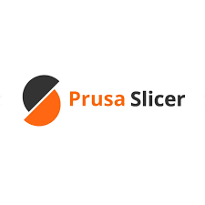

Cura
• Perfetto per principianti
• Molti profili automatici
• Interfaccia semplice e intuitiva
• Ampio supporto stampanti
Cura

PrusaSlicer
• Impostazioni avanzate
• Eccellente controllo pareti e flussi
• Grande precisione
• Ideale per stampe tecniche
PrusaSlicer

Bambu Studio
• Software ufficiale Bambu Lab
• Controllo vibrazioni e velocità automatico
• Eccezionale per alta velocità
• Slicata stabile e precisa
Bambu Studio

Orca Slicer
• Basato su Bambu Studio
• Molto flessibile e personalizzabile
• Torri di temperatura avanzate
• Ideale per materiali tecnici